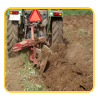
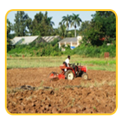
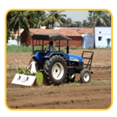

SOIL



Banana can grow from the poorest to the richest type of soil with varying success.
The soil should be tested before banana cultivation
soil should have good drainage, adequate fertility and moisture.
rich loamy and salty clay loam soil with pH between 6-7.5 is most preferred for banana cultivation.
Ill drained, poorly aerated and nutritionally deficient soils are not suitable for banana.
Extreme clayey, Sandy soil, Saline soil and Calcareous soil is not suitable for Banana cultivation.
soil of low lying areas, very sandy & heavy black cotton with ill drainage.
A soil that is not too acidic & not too alkaline, rich in organic material with high nitrogen content, adequate phosphorus level and plenty of potash are good for banana.
FILD PREPARATIN
Wetlands: no preparatory cultivation is needed
Garden lands: 2-4 ploughings are required
Padugai : one deep spade digging is needed
Hill Banana: Cleaning the jungle and construction of contour stone
walls before planting is required.
Prior to planting banana, grow the green manuring crop like daincha,
cowpea plough insist in the field.The selected field must be ploughed
4-6 times and allowed to weather for two weeks.
Rotovator or harrow is used to break the clod and bring the soil to
a fine tilt. During soil preparation basal dose of FYM (about 50 tonnes/ha.
before last harrowing) is added and thoroughly mixed into the soil.
The field is leveled by passing a blade harrow or laser leveler.
Land Leveling through Laser Leveler is one such proven technology
is highly useful in conservation of irrigation water.
Laser land leveling is leveling the field within certain
degree of desired slope using a guided laser beam throughout the field.
By using laser leveler, the land looks leveled even when the wide
topographic variation exists, wide variability in crop yields
at field, better distribution of water, saving the water, improvement
in nutrient use efficiencies, option for precision farming, achieve
higher crop productivity.
A pit size of 45cm x 45cm x 45cm is normally required. The pits are
to be refilled with topsoil mixed with 10 kg of FYM (well decomposed),
250 gm of Neem cake and 20 gm of carbofuron.
In areas where nematode problem is prevalent, nematicides and fumigants
are also added to pits before planting.
Prepared pits are left to solar radiation helps in killing the harmful
insects, is effective against soil borne diseases and aids aeration.
In saline alkali soil where PH is above 8 Pit mixture is to be modified to incorporate organic matter. Addition of organic matter helps
in reducing salinity while addition of purlite improves,
porosity and aeration.
Alternative to planting in pits is planting in furrows. Depnding on soil
strata one can choose appropriate method as well as spacing
and depth at which plant is required to be planted.
In wetlands and hilly areas no land preparation is needed and pits are
directly taken in the required spacing. For Hill Banana cultivation
clean the jungle and construct contour stone walls before planting.
Plough furrows may be formed length wise and breadth wise of the
field at the required spacing and its intersection of the plough furrows
pits of size 0.6m x 0.6m x 0.6m are dug sufficiently ahead at points fixed
for planting.
STEP TO PLANT BANANA
hvaing yourown access to delicious, healthy can bananas can be
wonderful if you're prepared for an extensive growing period.
if you live in a warm climate of have a good indoor growingng location,
read on to lean about the yearlong journey of banana plant gardening.
look up your area's temperature and humidity choose an area with good drainage
find the suniest area in your area
Allow suffficient space
for dwarf varieties consider growing it indoors